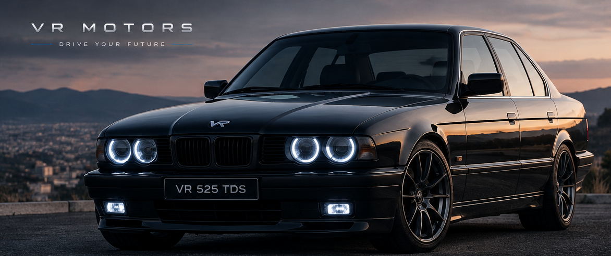
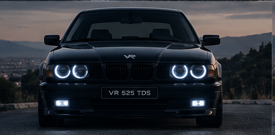
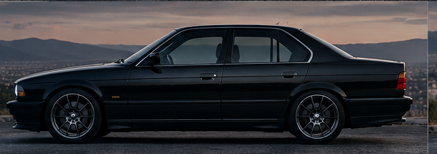
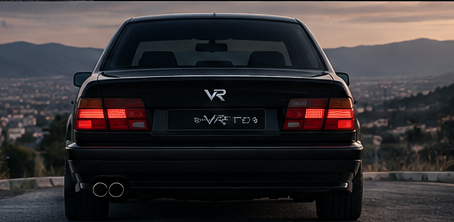
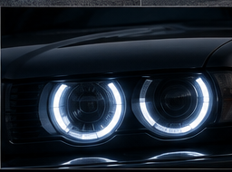
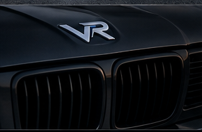
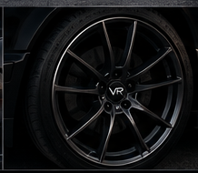
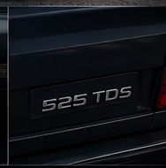
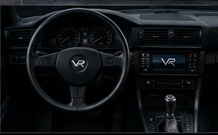
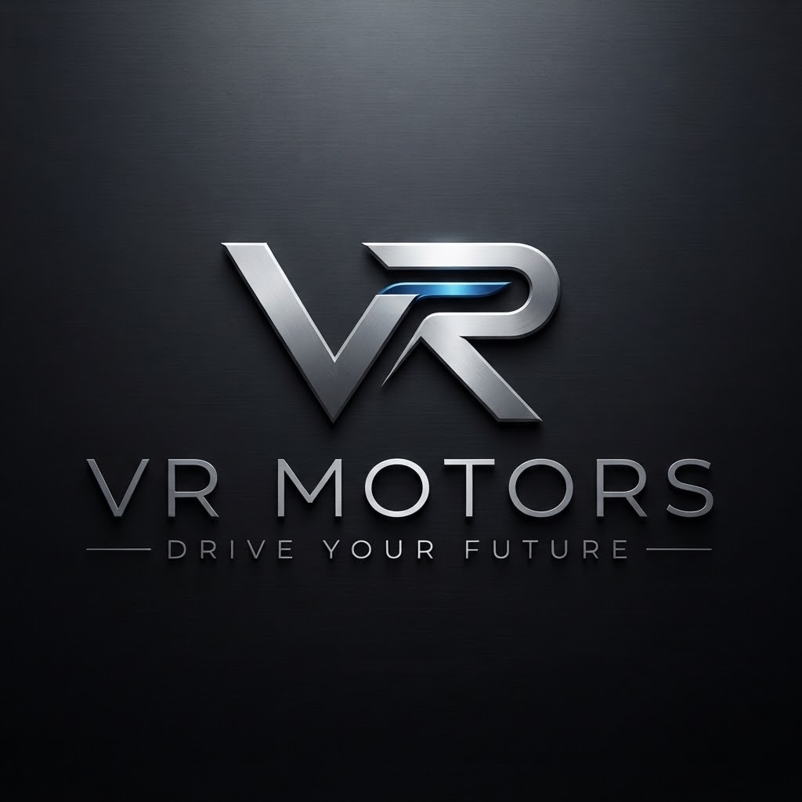

Propulsión trasera
Motor longitudinal delantero, reparto de pesos 52/48 y diferencial autoblocante mecánico. El comportamiento neutro que buscan los conductores exigentes.

Fabricado en Madrid · Entregas desde 2029
Inspirado en un clásico. Creado para el futuro.
Propulsión trasera, cambio manual y cinco cilindros. Con la tecnología de hoy.
El clásico reinterpretado
El VR 525 TDS conserva lo que hacía especiales a las grandes berlinas de los noventa: proporciones equilibradas, capó largo, cintura baja, pilares finos y una mecánica que conecta al conductor con la carretera. Todo lo que entonces era una limitación se ha modernizado.
Motor longitudinal delantero, reparto de pesos 52/48 y diferencial autoblocante mecánico. El comportamiento neutro que buscan los conductores exigentes.
Seis velocidades, embrague reforzado y recorridos cortos. Una rareza en el segmento D. Automático de 8 velocidades con levas como opción.
Estructura de acero al boro, objetivo de cinco estrellas Euro NCAP, iluminación LED matricial y asistentes de nivel 2 desconectables con un solo botón.
Diseño exterior

Cuatro faros redondos con anillo LED alrededor de un proyector matricial. Doble parrilla con lamas activas que se cierran a velocidad de crucero.

Capó largo, habitáculo centrado y maletero corto. Superficie acristalada un 15 % mayor que la media del segmento.

Pilotos LED con intermitentes dinámicos, maletero de 480 litros y doble salida de escape en el lado izquierdo.

LED matricial · 24 segmentos
Emblema en zamak cromado
Llanta forjada 18" · 9,8 kg
525 TDS, un guiño a los noventaUna carrocería, tres energías
Una sola plataforma preparada desde el primer día para diésel, híbrido ligero y eléctrico. Lanzamiento escalonado entre 2029 y 2031.
2029
Diésel 2.5 turbo · 5 cilindros
Desde 42.900 €
Configurar2030
Diésel + híbrido ligero 48 V
Desde 46.500 €
Configurar2031
100 % eléctrico · propulsión trasera
Desde 58.900 €
ConfigurarFicha técnica · VR 525 TDS
VR 2.5 TDS de desarrollo propio: cinco cilindros en línea, un sonido y una suavidad entre un cuatro y un seis cilindros, con un par muy lleno a bajo régimen.
La arquitectura clásica de las berlinas de propulsión: árbol de transmisión de dos tramos y diferencial trasero autoblocante.
Rigidez torsional de 28.000 Nm/grado, el doble que las berlinas en las que se inspira. Una dirección calibrada para transmitir lo que pasa en el asfalto.
Una relación batalla/longitud del 59 %: ruedas en las esquinas, voladizos cortos y la proporción de las berlinas clásicas.
Tecnología a bordo

Asiento bajo, volante de tres radios con aro grueso, palanca corta y mandos físicos para climatización y audio. Sin pantallas táctiles para las funciones básicas: distraen, y un botón físico no se queda obsoleto.
Cuero, aluminio cepillado y plásticos blandos de origen reciclado. Las costuras y el bordado del emblema se hacen en nuestra propia sección de tapicería, así que cada coche se personaliza por pedido.
Cuatro proyectores de 24 segmentos que oscurecen solo las zonas donde hay otros vehículos. 28 W por faro y 1,2 kg menos que un faro convencional.
Android Automotive, Apple CarPlay y Android Auto inalámbricos. Actualizaciones OTA, diagnosis remota y llave digital en el móvil.
Crucero adaptativo, mantenimiento de carril, frenada de emergencia con detección de peatones y ciclistas y cámara 360°. Desconectables con un único botón físico.
Relojes físicos de velocímetro y cuentarrevoluciones con pantalla TFT de 7". Infoentretenimiento de 10,2" integrado en la consola, sin sobresalir del salpicadero.
Villaverde · Madrid
Nuestra fábrica está en el distrito industrial de Villaverde, al sur de Madrid, una zona con tradición automovilística: allí estuvieron Barreiros y la planta de Stellantis. A menos de dos kilómetros de la A-4 y la M-40 y a 25 minutos de Barajas y del puerto seco de Coslada.
Dos líneas de prensas de 800 a 1.600 toneladas transforman bobinas de acero y aluminio en piezas de carrocería.
Soldadura por puntos, láser y brazing, remaches autoperforantes y adhesivos estructurales. Etiqueta RFID desde la primera soldadura.
Nave independiente. Cataforesis, aparejo, base al agua y barniz: 110 micras y doce años de garantía anticorrosión.
La carrocería pintada se une a la mecánica premontada con 24 tornillos estructurales, cada apriete registrado por número de bastidor.
Cada coche termina con una prueba dinámica de 40 puntos en nuestra pista de 1,2 km. ¿Quieres verlo? Ofrecemos visitas guiadas a la fábrica y, si has reservado tu VR 525, puedes ver cómo se monta.
Sostenibilidad
Para comparar motorizaciones sumamos las emisiones de fabricación y las de uso durante 150.000 km. Por eso la gama evoluciona hacia la electrificación a medida que la red se descarboniza.
El eléctrico amortiza su mayor huella de fabricación a partir de los 35.000 km.

La marca
VR es corto, se pronuncia en cualquier idioma y admite una lectura con significado: la V de vanguardia, velocidad y valor; la R de reinterpretación, robustez y respeto por el clásico.
«Motors» no es decorativo: indica que fabricamos y que el motor es de desarrollo propio. Y «Drive your future» resume la propuesta: conducir hoy un coche con alma de clásico, preparado para el futuro.
Presentación de la marca y prototipo rodante
Construcción de la fábrica y preserie de 50 unidades
Apertura de reservas y primeras entregas del VR 525 TDS
Lanzamiento del VR 525 TDS Hybrid
Lanzamiento del VR 525 e
Segundo turno y 6.000 unidades al año
Trabaja con nosotros
Más del 70 % de nuestros puestos son perfiles de Formación Profesional: Electromecánica de Vehículos, Automoción, Mecatrónica Industrial y Automatización y Robótica. Firmamos convenios de FP Dual con institutos de Madrid y tenemos un centro de formación propio de 800 m².
Programa Fundadores
Los primeros clientes Fundadores participan en la validación final del VR 525. Precio fijo y transparente: el precio configurado es el precio final, sin negociación.